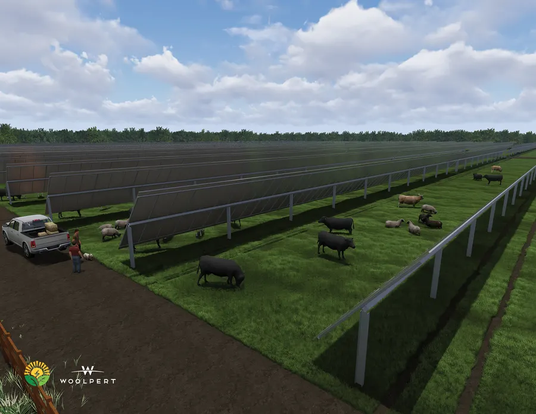

Irrigated pasture + material dispersal
More forageWater, nutrients, and agricultural inputs can be delivered to the root zone to stabilize forage production, extend productive grazing periods, and increase carrying capacity.
Solargation® is designed as livestock infrastructure: fixed-set irrigation and material dispersal for pasture, agrivoltaic shade and heat monitoring for animal comfort, and 24/7 camera analytics for early health and welfare alerts.
The livestock value comes from three coordinated functions that operate together, but can each be evaluated independently for agricultural productivity and welfare.
Water, nutrients, and agricultural inputs can be delivered to the root zone to stabilize forage production, extend productive grazing periods, and increase carrying capacity.

The elevated canopy provides shade while sensors track temperature, humidity, and heat-load indicators so managers can intervene before welfare and production losses occur.

Fixed cameras and AI-enabled video analytics can track animal counts, activity, posture, gait, bunching, water use, and other welfare indicators without relying only on periodic visual inspection.
The system is strongest where pasture, shade, cooling water, and continuous observation directly affect animal output. Final yield will be site-specific, but the biological benefit pathways are well established.
Computer vision and precision livestock farming research supports the use of cameras, thermal imaging, and AI tools to detect animals, count animals, recognize behavior, assess gait or lameness risk, and monitor welfare indicators. Solargation® provides elevated infrastructure, power, communications support, and known animal movement corridors for those systems.
The goal is not to replace animal husbandry. It is to give the farmer earlier visibility when an animal stops grazing, avoids water, isolates from the herd, shows altered gait, bunches in heat, or enters a high-risk area.
The page uses conservative, farm-facing claims: measured heat-stress reductions, observed yield protection pathways, and forage/carrying-capacity principles. Site-specific yield should be confirmed through a forage plan, stocking plan, heat-monitoring plan, and animal-health analytics protocol.
| Livestock system | Measured or documented research finding | Solargation® application |
|---|---|---|
| Irrigated pasture | Research and extension records report irrigated pasture production commonly measured in animal-unit-months; California Agriculture records showed 12 AUM/ac/year readily obtainable in valley studies, with records averaging 10.8 AUM/ac and reported highs of 17.8 AUM/ac. | Use fixed-set irrigation and material dispersal to move pasture from rainfall-dependent production to managed forage production. |
| Cattle carrying capacity | WSU guidance states well-managed irrigated pasture may allow three to four times the stocking rate of poorly managed pasture, while NDSU/NRCS defines carrying capacity by available forage and AUMs. | Evaluate the system by forage produced, pasture recovery, stocking rate, and cattle-days per acre. |
| Dairy cattle agrivoltaic shade | University of Minnesota WCROC measured lower afternoon respiration in shaded cows (66 vs 78 breaths/min), lower internal body temperature between milking periods, and about +1°F higher internal body temperature for no-shade cows from 1 p.m. to midnight. | Elevated PV shade becomes animal-welfare infrastructure, not only energy infrastructure. |
| Beef cattle shade | Peer-reviewed beef-cattle shade reviews report lower respiration rates, body temperatures, and panting scores; summarized feedlot studies found higher average daily gain, feed efficiency, hot carcass weight, and dressing percentage in shaded cattle. | Design shade, water access, and heat alerts around the hottest hours and highest-risk animal classes. |
| Swine heat mitigation | Research on growing pigs concludes high ambient temperatures affect physiology, behavior, and performance, while cooling systems such as floor cooling, water bath, or sprinklers improve performance and welfare under hot conditions. | Use the water platform and canopy for timed cooling and outdoor/semi-open swine heat-stress mitigation. |
| Poultry heat mitigation | Poultry heat-stress reviews document reduced feed efficiency, body weight, feed intake, egg production, and increased mortality under high environmental temperature. | Use shade, water, ventilation support, and camera alerts to manage flock distribution, water access, panting, and mortality risk. |
| Camera animal-health analytics | Precision livestock farming reviews find camera and AI systems can support lameness detection, behavior recognition, body condition, mastitis and welfare monitoring, and 24/7 observation in livestock settings. | Use cameras mounted on Solargation® infrastructure for non-invasive animal welfare alerts, operational records, and farmer decision support. |

The livestock design keeps agricultural use in place while adding irrigation, shade, heat monitoring, power, and animal analytics that can improve forage reliability, animal comfort, welfare visibility, and production resilience.
Source integrity note: research findings are used as design support, not a guaranteed yield promise. Actual farm performance should be verified through forage sampling, soil moisture monitoring, animal counts, stocking-rate calculations, and veterinary review.
